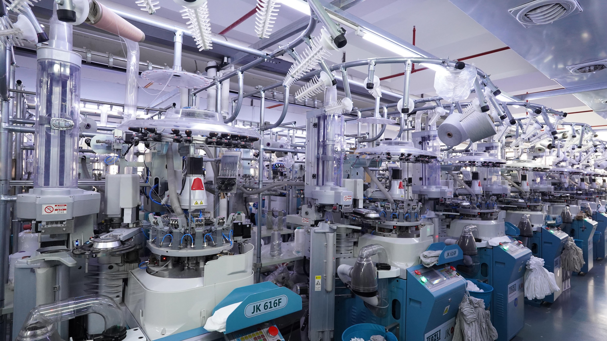
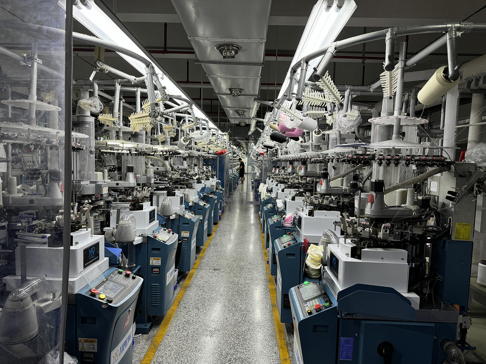
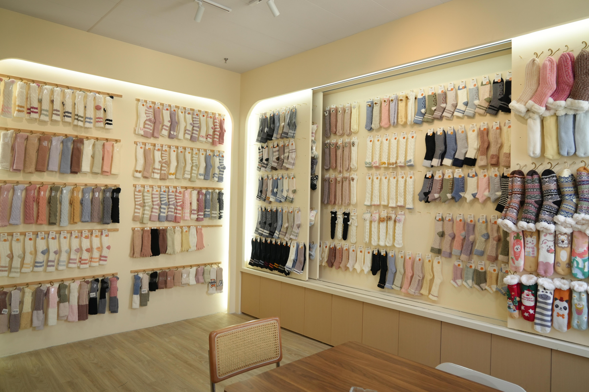

Brands
Balance material feel, logo clarity, colors and packaging for a recognizable collection.
GoodStartSocks is a factory-direct custom sock partner for businesses looking to develop socks with clear design, material and packaging requirements.
We support custom projects from sample development through bulk production. Our work includes material discussion, logo and pattern review, size planning, packing coordination and production follow-up.
For buyers, the goal is not simply to order socks. It is to turn an idea into a product that can be approved, produced consistently and reordered with confidence.
Request a Custom Sock Quote

FACTORY-BASED CUSTOM SOCK SUPPLIER
GoodStartSocks works with its own sock production resources to help business customers develop a practical product specification before bulk production starts.
We review the sock type, material direction, colors, logo method, size range, quantities and packaging details with you. This helps the approved sample become a clear reference for the finished order.
Our team is set up to support both new custom launches and repeat bulk orders for brands, retail programs, teams and promotional projects.
GOODSTARTSOCKS AT A GLANCE
We combine an experienced knitting workshop with clear communication for custom business orders.
Our setup helps us manage the details that matter before and during production.
SAMPLES, MATERIALS AND PRODUCT DIRECTION
Our showroom provides a useful starting point for discussing product direction: sock height, texture, ribbing, colors, patterns and finishing details.
Bring your artwork or inspiration. We will help turn it into a clear brief for a sample and quotation.
Explore customization options →
CUSTOM SOCKS FOR DIFFERENT BUSINESS NEEDS
Every project has different priorities. We help organize the product and production details around your intended customer, use case and order plan.
Balance material feel, logo clarity, colors and packaging for a recognizable collection.
Plan fit, team colors, logo placement and size quantities for your members.
Create useful, wearable socks for gifting, staff programs and business events.
Coordinate style, branding, packing and quantities for your sales or campaign plan.
DIRECT FACTORY SUPPORT
Most custom sock issues come from unclear decisions early on. We help buyers check the important points before sample approval and bulk production.
Custom sock production handled through our workshop resources.
Clear discussion around artwork, samples and order details.
Support through sampling, approval, bulk production and packing.
Flexible direction for style, material, logo method and packaging.
Practical consideration for size breakdown, quantities and delivery needs.
Progress communication for samples, production and shipment coordination.
* Timing is a typical guide. Final production lead time depends on specifications, order schedule and shipping arrangements.
FREQUENTLY ASKED QUESTIONS
Our factory was established in 2010 and focuses on custom sock projects for business buyers.
We work as a factory-direct custom sock supplier, supporting product development and production communication for business orders.
We can discuss casual, fashion, sports, promotional and gift sock projects, including material, logo, pattern, size and packaging options.
Yes. Sample preparation normally takes 3–7 days, giving you a physical reference to review before you approve bulk production.
Send your sock type, design reference, quantity, size range and packaging needs to get started.
Request a Custom Quote